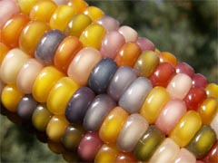
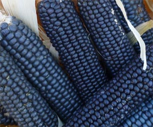

Цветная кукуруза
Все
привыкли к стандартной кукурузе желтого цвета, но оказывается,
кукуруза бывает полностью разноцветной и красочной!
Фермер
из США Carl Barnes в 2005 году вывел новый сорт разноцветной
кукурузы Glass Gem. Зерна в этих початках похожи на морские
жемчужины всех цветов.
При варке такой кукурузы разноцветие полностью сохраняется. Карл начинал с выращивания более привычных сортов индейской цветной кукурузы, а в 2008 году уже полностью перешел на свои собственные сорта. Glass Gem можно собирать примерно через 110-120 дней после посадки, когда шелуха сухая и початки от коричневых до самых интенсивных и полупрозрачных цветов. Зерна кукурузы Глас Джем не едят в виде зерен, ее можно перемалывать для получения крупы или изготовления поп-корна.

Кроме
того Карл вывел черную кукурузу под названием Rio Grande Blue,
семена которой вы можете заказать в его магазине NativeSeeds.
Высота растений зависит от количества воды, но может доходить
до 9 футов, обычно 6 футов.
Отмечают
что зерна черной кукурузы имеют отчетливый ореховый привкус.
Из муки синей кукурузы делают косметические маски. Изначально
черная или синяя кукуруза росла на севере Мексики и юго-западе
США, носила имя племени индейцев - хопи, которые
культивировали этот сорт. Хопи имеет природное происхождение,
а черный цвет приобретает благодаря большому количеству
антоцианов в мякоти. В годы СССР черную кукурузу можно было
встретить и на отечественных полях. Синяя кукуруза содержит на
30% больше белка.
Семена кукурузы следует сажать непосредственно в теплую более 5ºC . Поливать растение рекомендуется два раза в неделю, в жаркую погоду — чаще. Кукуруза любит азотистые почвы, поэтому рядом с ней полезно высаживать бобовые растения.